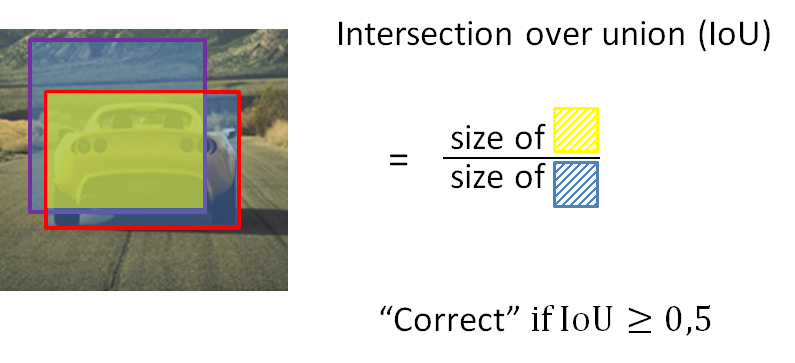
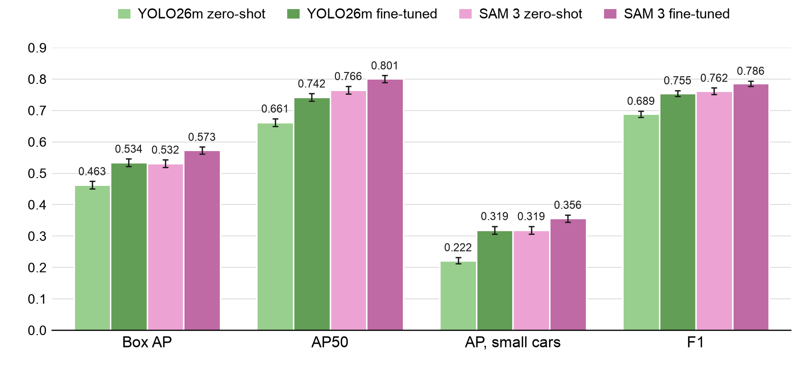
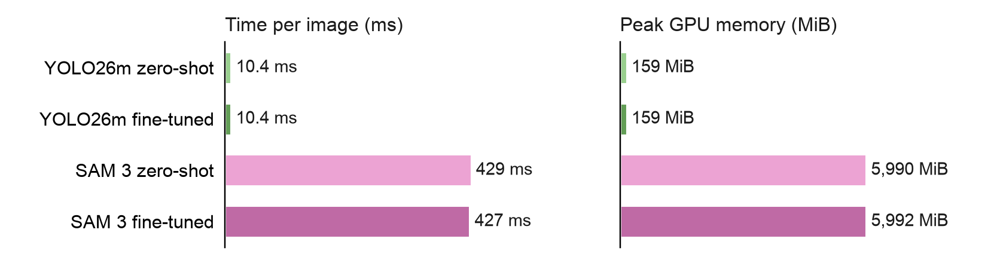
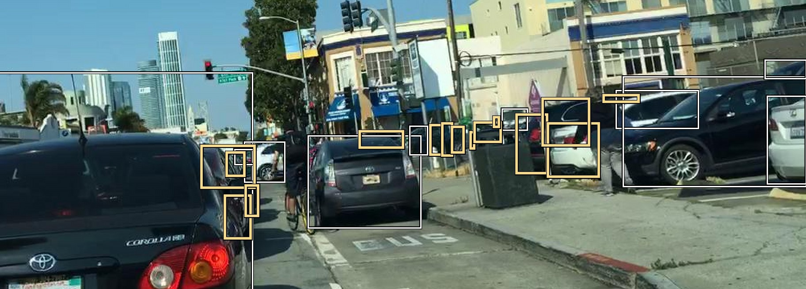

We tested four models on 998 BDD100K dashcam images that contain 10,733 cars. Two are YOLO26m and SAM 3 as released, which we call zero-shot. The other two are the same models after fine-tuning on our own training images. All four were scored against the same labels with the same evaluation code.
Most Accurate
Fine-tuned SAM 3 leads on every score. Its box AP is 0.573, against 0.534 for fine-tuned YOLO26m.
41 Times Faster
YOLO26m needs about 10 ms per image. SAM 3 needs about 430 ms and 38 times more GPU memory.
Same Blind Spots
About one car in five is missed by all four models. Almost all of these cars are small in the image.
How a Detection Is Scored

Figure 1: Intersection over union (IoU). The red box is the true box and the purple box is the model's box. The yellow area is where the two boxes overlap. The blue area is everything the two boxes cover together. Image from datahacker.rs, “#026 CNN Intersection over Union”.
Each model draws a box around every car it finds. We compare that box with the true box from our labels. Intersection over union (IoU) is the area the two boxes share divided by the total area they cover. An IoU of 1 is a perfect fit, and an IoU of 0 means the boxes do not touch. A detection counts as correct when its IoU is at least 0.5.
AP50 and F1 use this 0.5 cutoff. Box AP repeats the test at ten cutoffs from 0.5 to 0.95 and averages the results, so it also rewards tight boxes.
Accuracy

Figure 2: Scores of the four models on the test set. Higher is better. The small black lines are 95% confidence intervals.
Fine-tuned SAM 3 is the most accurate model on every score. Its box AP is 0.573, against 0.534 for fine-tuned YOLO26m. Box AP is the standard COCO score for how well a model finds cars and places boxes around them. Fine-tuning helped both models, and it helped YOLO26m more. After fine-tuning, YOLO26m is as accurate as SAM 3 was before fine-tuning. Small cars are the hardest for every model.
SAM 3 is also the only one of the two models that outlines each car pixel by pixel. After fine-tuning, its outlines overlap the true car pixels with an IoU of 0.899.
Speed and Memory

Figure 3: Time per image and peak GPU memory on our lab GPU, an NVIDIA RTX A2000. Lower is better.
This accuracy has a price. YOLO26m needs about 10 ms per image and SAM 3 needs about 430 ms, so YOLO26m is about 41 times faster. YOLO26m can keep up with a 30 frames per second video, while SAM 3 can handle only about one frame in thirteen. SAM 3 also needs 38 times more GPU memory.
Where the Models Fail

Figure 4: One test image. The yellow boxes mark 16 cars that none of the four models found. The white boxes mark cars that at least one model found.
All four models miss many of the same cars. About one car in five, 2,211 of 10,733, is missed by every model, and 93% of these cars are small in the image. They are far away or partly hidden behind other cars, as in the photo above. Even the best model, fine-tuned SAM 3, finds only three cars out of four.
Summary of the Numbers
| YOLO26m zero-shot | YOLO26m fine-tuned | SAM 3 zero-shot | SAM 3 fine-tuned | |
|---|---|---|---|---|
| Box AP | 0.463 | 0.534 | 0.532 | 0.573 |
| AP50 | 0.661 | 0.742 | 0.766 | 0.801 |
| F1 | 0.689 | 0.755 | 0.762 | 0.786 |
| Cars found | 60% | 69% | 71% | 75% |
| Time per image | 10.4 ms | 10.4 ms | 429 ms | 427 ms |
| GPU memory | 159 MiB | 159 MiB | 5,990 MiB | 5,992 MiB |